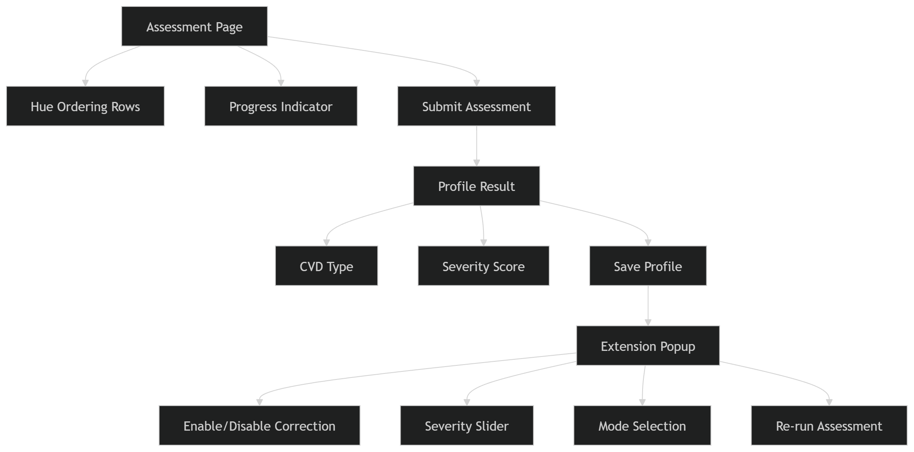

Dynamic Visual Accessibility Layer for Colour Vision Deficiency:
A Personalized Real-Time
Screen Colour Correction System
Colour Vision Deficiency (CVD) affects approximately 300 million people worldwide. Roughly 8% of men and 0.5% of women impairing their ability to distinguish certain colours and making many digital interfaces inaccessible.
Colour perception: Normal vision vs. CVD
Ishihara Plate Test: Normal vs. CVD perception
The Dynamic Visual Accessibility Layer (DVAL) is a software system designed to provide personalized, real-time colour correction for individuals with Colour Vision Deficiency (CVD). Built as a browser extension, DVAL automatically estimates a user's specific type and severity of CVD and applies a tailored colour transformation across all web content with no specialist hardware and no clinical diagnosis required.
Three-Phase System Pipeline
Offline Training
User Profiling
Screen Layer
Level-1 Data Flow Diagram
Storage
M_CVD(t,δ) + C_type
WebGL Shader
Machado Model
Browser Extension Architecture
Service Worker
profile storage
WebGL Pipeline
per-pixel correction
toggle · slider · mode
hue-ordering test
CVD Classification (Hue Ordering Errors)
GLSL Pixel Shader (Real-Time Correction)
vec3 c_orig = texture2D(uScreen, vTC).rgb;
vec3 c_sim = uSimMatrix * c_orig;
vec3 err = c_orig - c_sim;
vec3 c_corr = c_orig + uCorrMatrix * err;
gl_FragColor = vec4(clamp(c_corr, 0.0, 1.0), 1.0);
CVD assessment interface flow

| Gap / Feature | Best Prior Work | Status |
|---|---|---|
| Fixed daltonization for dichromacy | Brettel [8]; Machado [7] | Closed — used as baseline |
| DL recolouring of static images | Chen et al. [13]; CVD-GAN [14] | Closed — quality baseline |
| Degree-adaptive correction (δ) for anomalous trichromacy | Zhu et al. [5] — ~30s/image | Partial — extended to real-time |
| Real-time personalized correction without AR headset | Hue4U [2] — Meta Quest 3 required | Primary contribution |
| End-to-end pipeline: profiling → model → screen overlay | No existing unified system [4] | Open → Primary |
| In-browser profile refinement (no clinical diagnosis) | No tool supports this [3] | Open → secondary contribution |
Evaluation against fixed-filter daltonization baselines using CIEDE2000 (ΔE) colour-difference metrics and an Ishihara plate recognition study (pre/post correction).
| System | Approach | Personalized | Real-Time | No HW |
|---|---|---|---|---|
| OS Filters | Static filter | ✗ | ✓ | ✓ |
| Dalton Ext. | Fixed recolor | ✗ | ✓ | ✓ |
| Zhu et al. [5] | Optimization | ✓ | ✗ | ✓ |
| Hue4U [2] | AR+Machado | ✓ | ✓ | ✗ |
| DVAL (Ours) | Browser+Shader | ✓ | ✓ | ✓ |
- DVAL is the first end-to-end personalised, real-time CVD colour correction system deployable as a cross-application browser layer: no AR headset, no clinical diagnosis.
- The system combines a severity-conditioned Daltonization model (Machado matrices) with an in browser hue-ordering profiler to automatically estimate CVD type and severity δ.
- A WebGL pixel shader applies correction across all browser content at ≥60 FPS, using only two matrix multiplications per pixel.
- Future work: Extend beyond browser to OS-level screen capture; support feedback based profile refinement; validate on wider, clinically diagnosed CVD population.
Key Contribution: A software only, privacy preserving, personalized CVD accessibility layer that works on any web content making digital interfaces equitable for the 300M+ people worldwide living with colour vision deficiency.